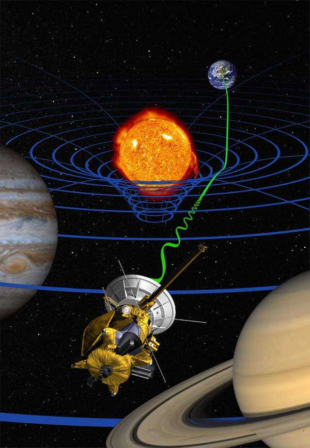
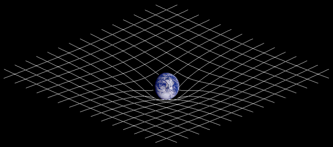

Desh06 ago 2008, 15:38
EUCLA ha scritto:Che dice Desh, son completamente fuori strada? :?
Non saprei, l'ho postato perché su questo non avevo assolutamente nessuna idea,
Tra Giove e la stella viene esercitata una forza attrattiva, solo che mentre per Giove, con la sua bella massa, l'accelerazione è ininfluente
la stella in questione è il sole, quindi direi che l'accelerazione di Giove non è ininfluente, visto che lo tiene in rotazione!
E adesso si tratterebbe di avere un pò di dati.
Tipo $ t $ l'intervallo di tempo che intercorre tra due misurazioni del rilevatore, $ d $ quanto piccolo possa essere..
più che altro il risultato a cui sei arrivata implicherebbe che l'effetto Doppler aumenti con il tempo; dipende dalla velocità della sorgente, se questa aumenta continuamente, aumenta anche l'effetto (diminuisce la frequenza), cosa che non mi convince molto.
Non bisognerebbe considerare anche il fatto che Giove ruoti attorno al sole e quindi l'accelerazione del sole dovuta a giove cambia continuamente direzione? (questo potrebbe essere ciò che porta alla periodicità di cui parla il testo)
Fedecart06 ago 2008, 16:30
Per Eucla, il sole è l'unica stella attorno alla quale si può trovare giove! :D
Ok potrei dire una marea di idiozie enormi... Ma ci provo. Poi nel caso chi ne sa più di me mi correggerà, così imparo anche io =)
Allora credo che le stelle non si muovano per effetto di forze gravitazionali dei pianeti in quanto contengono molta più massa dei pianeti, e in ogni caso si sta parlando del sole e di giove quindi è noto che il sole è molto più massiccio, non si muove rispetto a giove se non insieme a tutta la galassia ma sono movimenti così lenti che spero non si debbano tenere in conto. Secondo me la frequanza della luce diversa è dovuta al pianeta orbitante.
Immagina che sia la stella che l'osservatore siano fermi, in linea d'aria l'uno con l'altro, a una distanza maggiore del raggio del sistema solare, sullo stesso piano in cui orbita Giove, e l'osservatore non scolla mai gli occhi di dosso dal sole. Ora, la stella emette sempre la stessa frequanza, ma ad un certo punto succederà che Giove incrocierà la linea osservatore-sole. In quel momento, il raggio di luce, che viaggia lungo la stessa linea, verrà deviato dal campo gravitazionale del pianeta, per via della relatività generale. Ma se la velocità della luce e sempre la stessa, e nello stesso intervallo di tempo la stella produce lo stesso numero di onde, perchè quaste onde arrivino a destinazione in ugual numero, nonostante ci sia Giove in mezzo devono un po stirarsi, avendo una lunghezza d'onda maggiore e dunque una frequenza minore, e questo succede per via della relatività genereale e del campo gravitazionale del pianeta. Poi giove supera la line e tutto torna come prima per un altro anno siderale...
Fatemi sapere se è tutto oscenamente sbagliato, se si può prendere qualcosa di giusto e cestinare il resto, o se va bene...
g(n)06 ago 2008, 17:01
Provo a scrivere il mio ragionamento. Forse il punto fondamentale è che sia il pianeta che la stella ruotano attorno al centro di massa comune, e quindi anche la stella in realtà compie un moto circolare. (in realtà ho appena letto il post di Fedecart che lo esclude :( però lo posto lo stesso, almeno potete insultarmi)
Quindi un osservatore posto nello stesso piano dell'orbita di Giove potrebbe rilevare un cambiamento di frequenza luminosa del Sole tra il periodo in cui questo si allontana e quello in cui si avvicina. Dalla formula per l'effetto Doppler si può calcolare il rapporto tra le frequenze che risulta
$ \displaystyle\frac{c-v_S}{c+v_S} $
Si tratta quindi di calcolare la velocità massima di allontanamento (o avvicinamento) che coincide con la velocità tangenziale del moto circolare del Sole, ma poichè $ v=\omega r $ basta trovare
$ r $ (distanza tra il centro del Sole ed il centro di massa comune)
$ \omega $ (che penso si possa considerare nota)
$ r $ si trova tramite la relazione
$ \sum x_im_i=x_{cm}r $
dove le $ x_i $ sono calcolate a partire dal Sole, e quindi si trova
$ \displaystyle r=d\frac{m_G}{m_G+m_S} $
A questo punto si svolgono i conti e quindi si ottiene il rapporto tra le frequenze, che è legato alla sensibilità che lo strumento dovrebbe avere.
Ciò che non mi convince è che ci potrebbero essere altri pianeti (e in effetti ci sono!) e quindi non so quanto possa essere valido il ragionamento sopra...cioè, magari il centro di massa attorno a cui ruotano tutti i pianeti è talmente vicino al centro di massa del Sole che questo in realtà è pressochè fermo..oppure anche considerando solo Giove $ r $ risulta troppo piccolo..
attendo spiegazioni da qualcuno più esperto
PS
Fedecart ha scritto:Per Eucla, il sole è l'unica stella attorno alla quale si può trovare giove! :D
Sembra una esclamazione del tipo "Per Bacco!" o "Per Giove!" :lol: (da notare che tra l'altro sono entrambi forumisti)
Desh06 ago 2008, 20:55
Fedecart ha scritto:per via della relatività generale.
è la prima cosa che mi è venuta in mente quando ho letto il problema, ma l'ho subito scartata perché escluderei a priori che serva la relatività generale per quel test.
Non so quanti neodiplomati ci siano, per quanto il test possa puntare in altro, che sappiano trattare con quest'argomento (intendo andando oltre il tuo discorso qualitativo)
Fedecart07 ago 2008, 08:35
Si infatti io non so mettere un equazione in croce dopo quel post... :oops:
Anchè se un problema della normale con relatività ristretta e trasformazioni di Lorentz è già capitato!... Quindi meglio aspettarsi davvero di tutto per quel test...
g(n)07 ago 2008, 09:38
EUCLA ha scritto:Leggendo la tua soluzione non capisco perchè parli del rapporto..
:oops: sì, in effetti non l'ho spiegato proprio!
Hai ragione nel dire che conta la differenza tra le frequenze, ma non so per quale motivo io consideravo $ f_0 $ come non nota. Quindi per eliminarla ho fatto il rapporto, chiamiamolo $ k $, tra la frequenza minima e quella massima. A questo punto, basta che lo strumento dell'osservatore riesca a distinguere $ f_{max} $ che rileva e $ k f_{max} $.
Non so perchè ho fatto questo ragionamento contorto (ovviamente se consideri $ f_0 $ come nota non serve), comunque dubito che sia la strada corretta...
Desh07 ago 2008, 11:00
Fedecart ha scritto:Anchè se un problema della normale con relatività ristretta e trasformazioni di Lorentz è già capitato!
Non è la stessa cosa, la relatività ristretta è molto più accessibile (almeno lle basi :P ), fa persino parte del programma dello scientifico PNI
String15 ago 2008, 09:49
uppo questo topic perchè mentre lo leggevo mi è venuta in mente una domanda che forse è un pò stupida e banale, ma che non mi so spiegare forse per la mia ignoranza in tale argomento:
Fedecart ha scritto:In quel momento, il raggio di luce, che viaggia lungo la stessa linea, verrà deviato dal campo gravitazionale del pianeta, per via della relatività generale.
Allora mi chiedo: come fa la luce che è formata da fotoni, particelle prive di massa, ad essere quindi deviata dal campo gravitazionale?
Fedecart15 ago 2008, 11:08
A quanto ho capito io leggendo un articolo divulgativo sull'argomento, i pianeti e le stelle creano, causa solo la loro massa, una curvatura tridimensionale nello spazio e nel tempo.
Quindi la luce non viene deviata, ma è lo spazio ad essere cambiato e quindi la luce, che deve pur muoversi nello spazio, fa un percorso più lungo.
Poi potrei aver detto una marea di scemenze, perchè ne so pochissimo sull'argomento.
Metto due immagini fregate a wikipedia che secondo me solo più eloquenti di molte parole...

